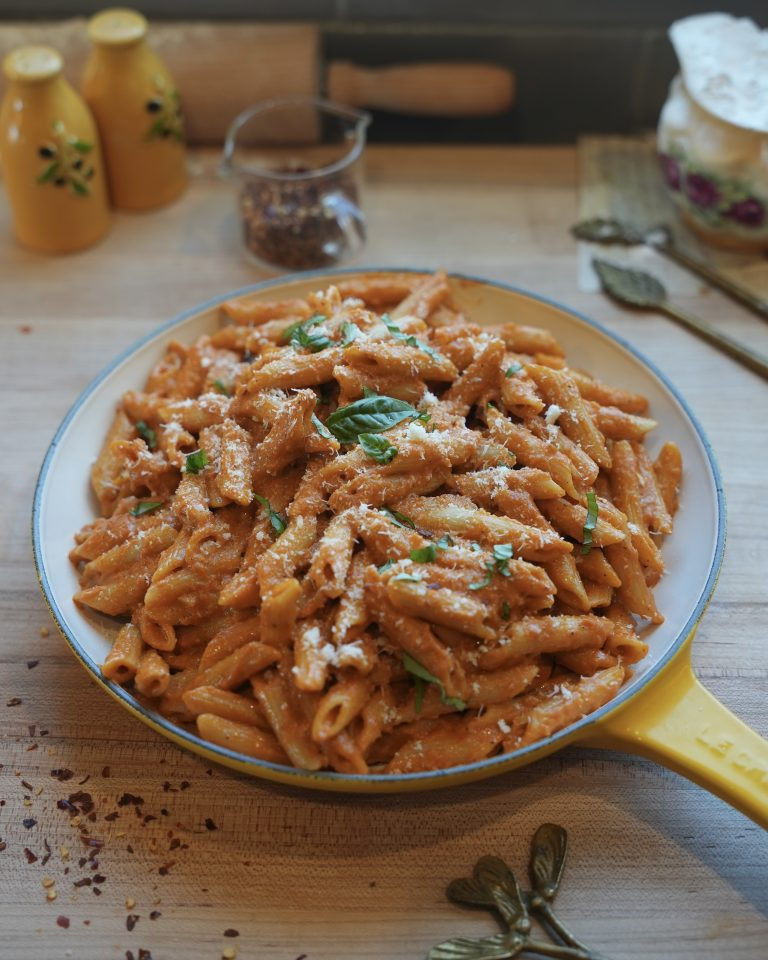

Creamy Pasta
Home

Description
Yum pasta! Always something i'm craving. Here is a quick and easy you can use to make your own creamy, dreamy and Michelin star worthy Pasta
Ingredients
- 3 tbsp Olive oil
- 1 shallot finely minced
- 6 garlic cloves finely minced
- 6 oz tomato sauce
- 1/3 cup chicken broth
- 1 tsp salt
- 1/2 tsp black pepper
- 1 1/2 tsp garlic powder
- 1 1/2 tsp onion powder
- 3/4 cup heavy cream
- 1 cup reserved pasta water
- 4 oz parmesan freshly grated
- 2 tbsp butter, unsalted
Steps
- In a large pot, bring water to a boil and generously salt. Cook pasta for 7 minutes until al dente. Reserve 1 cup of pasta water for later. Drain and set pasta aside.
- Finely mince shallot and garlic
- Heat olive oil over medium heat. Add shallots and garlic and saute for 4 minutes on low heat until soft.
- Add in tomato sauce, stirring frequently for 4-6 minutes on low-med heat.
- Pour in chicken broth, salt, black pepper, garlic powder and onion power. Stir well to combine and let it simmer for 1 minute
- Lower heat and stir in heavy cream into sauce. Bring mixture to a simmer on low-medium heat for 4 minutes
- Add in parmesan cheese and 1 cup reserved pasta water, stirring gently. Let it simmer for 5 minutes.
- Finish with extra parmesan and fresh basil leaves